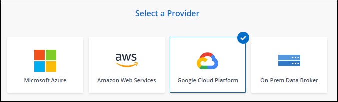
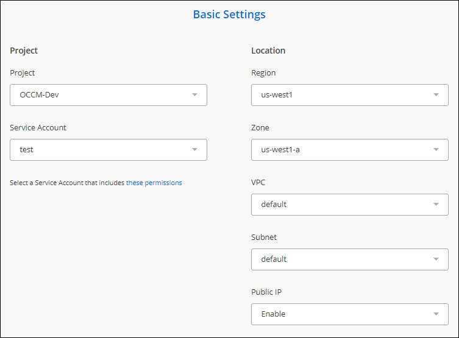

Solicitar cambios en el documento
Solicitar cambios en el documento Editar en GitHub
Editar en GitHub Guía del colaborador
Guía del colaboradorCreación de un nuevo agente de datos en Google Cloud
Colaboradores
Al crear un nuevo grupo de agentes de datos, elija Google Cloud Platform para implementar el software de agente de datos en una nueva instancia de máquina virtual en Google Cloud VPC. Cloud Sync le guía durante el proceso de instalación, pero en esta página se repiten los requisitos y los pasos que le ayudarán a preparar la instalación.
También tiene la opción de instalar el agente de datos en un host Linux existente en el cloud o en sus instalaciones. "Leer más".
Regiones compatibles de Google Cloud
Se admiten todas las regiones.
Privilegios de usuario raíz
El software de Data broker se ejecuta automáticamente como root en el host Linux. Ejecutar como root es un requisito para las operaciones de data broker. Por ejemplo, para montar recursos compartidos.
Requisitos de red
-
El agente de datos necesita una conexión saliente a Internet para que pueda sondear el servicio Cloud Sync para las tareas a través del puerto 443.
Cuando Cloud Sync implementa el agente de datos en Google Cloud, crea un grupo de seguridad que permite la comunicación saliente necesaria.
Si necesita limitar la conectividad saliente, consulte "lista de puntos finales con los que se contacta el data broker".
-
NetApp recomienda configurar el origen, el destino y el intermediario de datos para utilizar un servicio de protocolo de tiempo de redes (NTP). La diferencia de tiempo entre los tres componentes no debe superar los 5 minutos.
Permisos necesarios para implementar el agente de datos en Google Cloud
Asegúrese de que el usuario de Google Cloud que implementa el agente de datos tiene los siguientes permisos:
- compute.networks.list
- compute.regions.list
- deploymentmanager.deployments.create
- deploymentmanager.deployments.delete
- deploymentmanager.operations.get
- iam.serviceAccounts.listPermisos necesarios para la cuenta de servicio
Al implementar el agente de datos, debe seleccionar una cuenta de servicio que tenga los siguientes permisos:
- logging.logEntries.create
- resourcemanager.projects.get
- storage.buckets.get
- storage.buckets.list
- storage.objects.create
- storage.objects.delete
- storage.objects.get
- storage.objects.getIamPolicy
- storage.objects.list
- storage.objects.setIamPolicy
- storage.objects.update
- iam.serviceAccounts.signJwt
- pubsub.subscriptions.consume
- pubsub.subscriptions.create
- pubsub.subscriptions.delete
- pubsub.subscriptions.list
- pubsub.topics.attachSubscription
- pubsub.topics.create
- pubsub.topics.delete
- pubsub.topics.list
- pubsub.topics.setIamPolicy
- storage.buckets.updateNotas:
-
El "permiso iam.serviceAccounts.signJwt" es requerido sólo si usted está planeando establecer el corredor de datos para usar un almacén externo de HashiCorp.
-
Los permisos "pubsub.*" y "Storage.buckets.update" sólo son necesarios si tiene previsto habilitar la configuración de sincronización continua en una relación de sincronización desde Google Cloud Storage a otra ubicación de almacenamiento en la nube. "Obtenga más información acerca de la opción Continuous Sync (sincronización continua)".
Creación del agente de datos
Hay varias formas de crear un nuevo agente de datos. Estos pasos describen cómo instalar un agente de datos en Google Cloud al crear una relación de sincronización.
-
Haga clic en Crear nueva sincronización.
-
En la página definir relación de sincronización, elija un origen y un destino y haga clic en continuar.
Complete los pasos hasta llegar a la página Grupo de agentes de datos.
-
En la página Grupo de agentes de datos, haga clic en Crear agente de datos y seleccione Google Cloud Platform.

-
Introduzca un nombre para el Data broker y haga clic en continuar.
-
Si se le solicita, inicie sesión con su cuenta de Google.
El formulario es propiedad de Google y está alojado en él. Sus credenciales no se proporcionan a NetApp.
-
Seleccione un proyecto y una cuenta de servicio y, a continuación, elija una ubicación para el agente de datos, incluyendo si desea habilitar o deshabilitar una dirección IP pública.
Si no habilita una dirección IP pública, tendrá que definir un servidor proxy en el siguiente paso.

-
Especifique una configuración de proxy, si se requiere un proxy para el acceso a Internet en el VPC.
Si se necesita un proxy para el acceso a Internet, el proxy debe estar en Google Cloud y utilizar la misma cuenta de servicio que el agente de datos.
-
Una vez que el Data broker esté disponible, haga clic en continuar en Cloud Sync.
La puesta en marcha de la instancia tarda entre 5 y 10 minutos, aproximadamente. Puede supervisar el progreso desde el servicio Cloud Sync, que se actualiza automáticamente cuando la instancia está disponible.
-
Complete las páginas del asistente para crear la nueva relación de sincronización.
Ha puesto en marcha un agente de datos en Google Cloud y creado una nueva relación de sincronización. Puede utilizar este Data broker con relaciones de sincronización adicionales.
Proporciona permisos para utilizar bloques en otros proyectos de Google Cloud
Al crear una relación de sincronización y elegir Google Cloud Storage como origen o destino, Cloud Sync le permite elegir entre los bloques que la cuenta de servicio del agente de datos tiene permisos para utilizar. De forma predeterminada, incluye los bloques que se encuentran en el proyecto same como la cuenta de servicio de Data broker. Pero puede seleccionar cubos de proyectos other si proporciona los permisos necesarios.
-
Abra la consola de Google Cloud Platform y cargue el servicio Cloud Storage.
-
Haga clic en el nombre del bloque que desea utilizar como origen o destino en una relación de sincronización.
-
Haga clic en permisos.
-
Haga clic en Agregar.
-
Introduzca el nombre de la cuenta de servicio del agente de datos.
-
Seleccione una función que proporcione los mismos permisos que se muestran anteriormente.
-
Haga clic en Guardar.
Al configurar una relación de sincronización, ahora puede elegir ese bloque como origen o destino en la relación de sincronización.
Detalles sobre la instancia de VM de Data broker
Cloud Sync crea un agente de datos en Google Cloud utilizando la siguiente configuración.
- Tipo de máquina
-
n2-estándar-4
- VCPU
-
4
- RAM
-
15 GB
- De NetApp
-
Rocky Linux 9.0
- Tamaño y tipo del disco
-
Disco duro de 20 GB, estándar pd